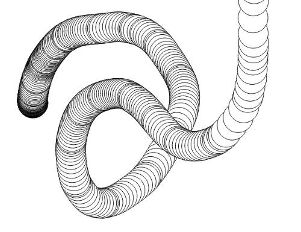

Kimotion Modding 101
Kimotion is a simple framework for creating interactive art exhibits in 2D or 3D and supports both Kinect and Leap Motion for viewer input. This tutorial will focus on the Leap, so to proceed with the tutorial you’ll need to set up your Leap.
Once the leap service is running, you can set up Kimotion!
Get the code
git clone git@github.com:mwcz/Kimotion.git
cd Kimotion
If you don’t know how to use git, no problem, just download and extract the
Kimotion zip file
instead.
Boot it up
Start a simple web server:
./start.sh
Then open localhost:8000/#example2d.
Wave your hand around and you should see a trail of black-outlined squares, like this:

Create your mod!
The easiest way to start your own mod is to make a copy of the default mod.
Come up with a name for the mod, let’s say mymod:
cd src
cp -r mods/example2d mods/mymod
Open index.html, find where it says <!-- Kimotion mods-->, and right after
it add a script tag to include your mod.
<script src="mods/mymod/main.js"></script>Open mods/mymod/main.js and on the very first line, change class example2d
to class mymod.
Open mods.js and add your mod name (mymod) to the list.
Whew, that process was pretty tedious, sorry about that.
You can now open localhost:8080/#mymod and see your mod in action! It’s going to look just like the example mod, but now it’s time to make it your own.
Customize your mod
Open mods/mymod/main.js and look at the general layout. There’s a
constructor function for your initial setup, and an update function which
runs once per frame (at 60 frames per second, ideally).
Many of the function calls (like background and fill) come from p5,
an awesome 2D drawing library. All of p5 is available to you, so take a
look at p5’s function reference for all the possibilities.
For your first tweak, replace rect with ellipse, and refresh your browser.
Voila!

There’s an existing mod with a few more tweaks, Rainbow Squares. It finds out the angle of hand motion and colors the square based on that angle.

Check out Rainbow Squares if you’re interesting in using an effect like that.
Modding resources
At this point, you’re an experienced Kimotion modder. If you have an idea but would like some feedback before getting started, I’m eager to assist. Here are a few ways to get help:
- Tweet @mwcz
- Open a Kimotion issue
- Explore the existing Kimotion mods